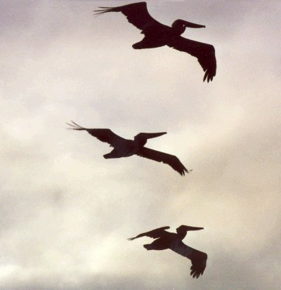

If a dog or cat is threatening the baby bird, do not instantly bring the baby bird in. Rather, keep the pet restrained for the short time the baby is there. However, if a cat or dog has already attacked the bird (either a juvenile or an adult bird), please take the bird immediately to a wildlife rehabilitation intake center. They will accept injured wildlife, evaluate its condition, treat it, and then turn it over to a wildlife rehabber for the nursing care the animal needs until it is ready to be released back into the wild.
It is a myth that birds will abandon their nests if a human has touched the nest or babies. Birds in general (with the exception of vultures) have a very poor sense of smell and will not be aware that you have touched their nest or babies. However, they will be bothered by the sight of humans near their nest. If you have had to move a nest or replace nestlings, watch from a distance to ensure that the parents find it and continue feeding their nestlings.
The only time we recommend bringing the baby birds to a wildlife rehabilitator is if you KNOW that the parents are dead or if the babies are injured in any way. The natural parents do a much better job of raising their young than any human could ever do. The natural parents can also teach their youngsters how to find food and avoid predators. A featherless baby bird that is brought to a wildlife rehabilitator must be fed every 15-20 minutes from dawn to dusk. This obviously requires a tremendous commitment of time and energy, and there is a severe shortage of songbird rehabilitators in our area. So please make every effort to keep baby birds with their parents and protect them from family pets.
If you do find a REAL orphan or an injured bird, please do the following:
1. Get it to a licensed wildlife rehabilitator (orphan) or to a wildlife rehabilitation intake center (if injured) AS SOON AS POSSIBLE. The longer the delay, the less chance it has of surviving.
2. Keep the baby bird WARM and in a quiet, dark place until you can bring it in (a small cardboard box lined with paper towels or toilet tissue works well).
3. DO NOT give the baby bird any liquids (they get all they need from their food and very often will inhale any liquid and aspirate). If you cannot get the baby bird to a qualified caretaker for several hours, moisten some dry cat or dog food in warm water. Let it soak for about 15 minutes until the food is soft, and then feed the baby bird just one nugget of food at a time. If it is featherless, it needs to be fed every 15 minutes. If it is fully feathered, it should be fed once per hour. Handle the bird as little as possible, and remember that birds are very fragile. Although not a complete diet, the moistened cat or dog food will keep the bird alive until it can get to a qualified caretaker.
The designated wildlife intake center for injured birds and other wildlife is currently the University of Tennessee Vet School on Neyland Drive. Ijams Nature Center maintains a hotline to provide information on how to contact rehabilitators.
Locally, the East Tennessee Council of Wildlife Rehabilitators meets once a month from September through April to further our education and training. They sponsor many programs and courses to keep us up-to-date in our knowledge of how to care for injured or orphaned wild animals. Two organizations, the International Wildlife Rehabilitation Council (IWRC) and the National Wildlife Rehabilitators Association (NWRA), publish journals that contribute to our continuing education in this fascinating field. IWRC also offers courses of study and examinations in basic and advanced wildlife care. Becoming a licensed wildlife rehabilitator requires a large commitment of time, energy, and resources. No funding is provided by the state or federal government for this activity, and rehabbers are volunteers committed to helping our wild neighbors since human activity often causes harm to animals. This is one way of helping the wild creatures who share our planet. There are many other ways to help.
1. Plant trees, shrubs, and vines known to attract birds because they provide food sources or cover for nesting. Some of the plants native to the Southeast region of the U.S. that birds find most attractive are these:
A. Trees B. Shrubs C. Vines and Flowers
Dogwood Pyracantha Trumpet Vine
Maple Barberry Morning Glory
Holly Holly Honeysuckle
Mulberry Ligustrum (Privet) Coneflower
Magnolia Viburnum Zinnia
Oak Nandina Sunflower
Cedar Serviceberry* Virginia creeper
Hemlock Rose Black-eyed Susan
Pine Cotoneaster Coreopsis
Sassafras Photinia
Crabapple Euonymus
Hackberry Flowering quince
Cherry
Plum
Mountain Ash
*The serviceberry is considered a tree in the Southeast, but a shrub in other parts of the U.S. In Tennessee, it reaches the size of a mature dogwood or redbud tree.
These are just a few of the plants that birds use. As you can see, many of these plants add beauty to our yards while providing food and cover for the birds. If you are interested in learning more about plants that attract birds, consult any of the many books available at gardening centers or home centers (such as Lowe's, Mayo's, Home Depot).

2. Avoid the use of chemicals on your lawns. Pesticides and herbicides are poisonous to birds and other wildlife (and not very good for humans, either).
3. Easiest of all, leave a place for wildlife in your yard. Choose a corner of your property and let it revert to nature. Some of the plants that humans dislike provide important sources of food for wildlife. For example, wild blackberry plants, sumac, black cherry, pokeweed, hay grasses, and honeysuckle may be weeds to homeowners, but they are food for birds and small mammals such as chipmunks and squirrels.
4. Watch carefully the things that you throw away to ensure that they do not pose a danger to birds or other wildlife. Do not discard fishing line where birds or turtles can get entangled in it; many animals lose limbs when they become entangled in fishing line and their circulation is impeded. Do not discard plastic rings from soft drink cans without cutting them apart so that animals cannot get entangled in them. Do not pour out oil or other petroleum distillates; take them to a service station for proper disposal. Do not throw away out-of-date computers; they contain many toxic substances such as lead and mercury. Instead, find someone in need of a computer, even if it isn't the latest model, and donate it to a worthy cause or individual.
5. Provide a source of water in your yard. It can be as simple as a birdbath or as elaborate as a fountain. Keep your source of water filled with clean water.
6. Provide bird feeders. A wide variety of attractive and useful bird feeders are available at low cost. Remember to keep your feeders filled and clean them frequently.
7. Do not cut down a tree or shrub during spring or summer months without first checking thoroughly to be sure there are no birds nesting in it.
Jean R. Cebik
(deceased, 11-04-2002)
Formerly Federal and State Licensed and IWRC-Certified Songbird Rehabilitator